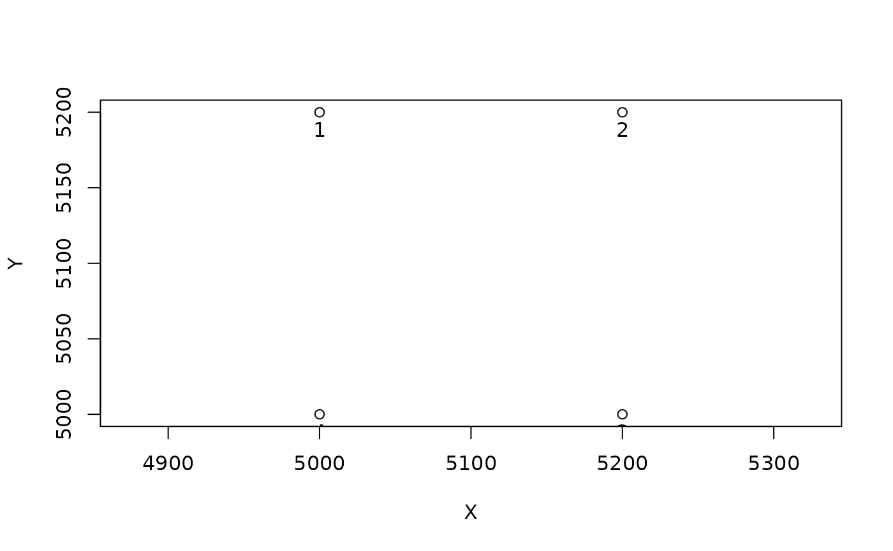

Get the UTM coordinates from the latitude and longitude of the corners of a plot. The function also assign a number to the corners in a clockwise or counterclockwise way, with the number 1 for the XY origin. Corner numbering is done as followed:
axis X: the corner 1 to the corner 2
axis Y: the corner 1 to the corner 4
Arguments
- longlat
(optional) data frame with the coordinates in longitude latitude (eg. cbind(longitude, latitude)).
- projCoord
(optional) data frame with the projected coordinates in X Y
- plot
A vector of codes (names) of the plots
- origin
A logical vector with TRUE corresponding of the origin of the axis of each plot.
- clockWise
A logical, whether the numbering should be done in a clockwise (TRUE) or counterclockwise (FALSE) way.
Value
A data frame with:
plot: The code of the plotX: The coordinates X in UTMY: The coordinates Y in UTMcorner: The corner numbers
Examples
coord <- data.frame(X = c(0, 200, 0, 200), Y = c(0, 0, 200, 200)) + 5000
plot <- rep("plot1", 4)
origin <- c(FALSE, FALSE, TRUE, FALSE)
# if you turn clock wise
corner <- numberCorner(projCoord = coord, plot = plot, origin = origin, clockWise = TRUE)
#> Warning: 'numberCorner()' is deprecated and will be removed in the next version.
#> Please see the vignette `Spatialized trees and forest stand metrics with BIOMASS`
# Plot the plot
plot(coord, asp = 1)
text(coord, labels = corner$corner, pos = 1)

# Using a counterclockwise way
corner <- numberCorner(projCoord = coord, plot = plot, origin = origin, clockWise = FALSE)
#> Warning: 'numberCorner()' is deprecated and will be removed in the next version.
#> Please see the vignette `Spatialized trees and forest stand metrics with BIOMASS`
# Plot the plot
plot(coord, asp = 1)
text(coord, labels = corner$corner, pos = 1)